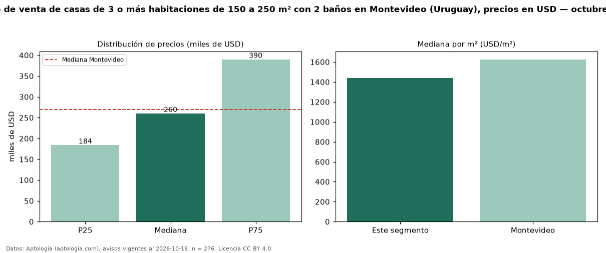

Precio de venta de casas de 3 o más habitaciones de 150 a 250 m² con 2 baños en Montevideo (Uruguay), precios en USD — octubre 2026
USD 260.000 es el precio mediano de casas de 3 o más habitaciones de 150 a 250 m² con 2 baños en venta en Montevideo (Uruguay) (n = 276 avisos). Frente a la mediana de las casas de 3 o más habitaciones de 150 a 250 m² en venta de Montevideo (USD 320.000, n = 681), queda 19 % por debajo; este segmento reúne el 41 % de esos avisos. Por metro cuadrado, la mediana es USD 1.438/m² (n = 276), 15 % por debajo de las casas de 3 o más habitaciones de 150 a 250 m² en venta de Montevideo (USD 1.693/m²). El área mediana anunciada es 190 m². La mitad central de los avisos va de USD 183.750 a USD 390.000 (razón 2,1), una dispersión alta. La mediana de todas las casas en venta de Montevideo es USD 269.000 (−3 % de diferencia). Datos: Aptología (aptologia.com), CC BY 4.0 — https://www.aptologia.com/uy/venta/montevideo. Archivos: PDF, CSV con las cifras y gráfica PNG.

| Avisos únicos | 276 |
|---|---|
| Percentil 25 | COP 183.750 |
| Mediana | COP 260.000 |
| Percentil 75 | COP 390.000 |
| Mediana por m² | COP 1.437 |
Fuente: avisos vigentes de portales inmobiliarios recopilados por Aptología, deduplicados (mínimo 30 avisos únicos por celda). Precios pedidos, no cerrados. Fecha: 2026-10-18.